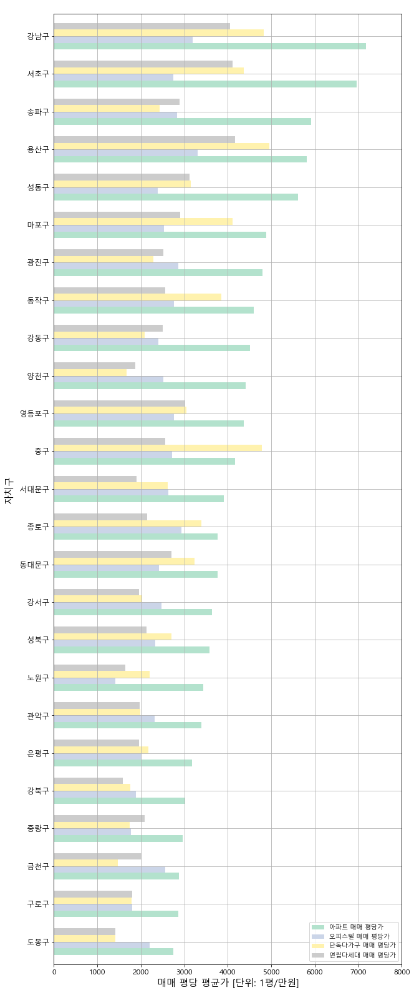

최근 1년간 서울 자치구별 매매 평당가 / 전세 평당가
2020~2021 서울 자치구별 아파트 매매 실거래가 평당 평균가

2020-2021년 아파트 매매 실거래 평당 평균가 중 가장 높은 가격을 보인 지역은 강남구로 7000만원대 초반을 기록했다.
서초구가 6000만원대 후반을 기록하며 그 뒤를 이었고, 송파, 용산, 성동이 5000만원대로 줄지어 따랐다.
반면, 도봉구가 2000만원 중후반대로 가장 낮은 가격을 보였다.
도봉구와 강남구의 평당 평균가는 3배 가까이 차이를 보였다.
*한국부동산원이 8월 전국 주간 아파트가격 동향을 조사한 결과 매매 가격은 0.30% 상승한 것으로 밝혀졌다.
*지난 8월 서울 아파트 주간 상승률은 2년 11개월 만에 최고치를 기록했다.
2020~2021 서울 자치구별 주택별 매매 실거래가 평당가 비교

2020-2021년 주택별 매매 실거래 평당가는 중구를 제외한 모든 자치구에서 아파트 평당가가 월등히 높은 가격을 보였다.
이러한 측면에서 다른 주택에 비해 아파트의 선호도가 높고 수요가 많다는 것을 실감할 수 있다.
아파트 가격은 강남구가 월등히 높은 양상을 보이며 오피스텔 가격은 노원구가 월등히 낮은 양상을 보였다.
아파트를 제외한 오피스텔, 단독다가구, 연립다세대 모두 용산구가 가장 높은 가격을 보였다.
용산구는 서울의 중심부이고 부동산 전문가들이 인정하는 향후 모습이 기대되는 지역 1순위이다.
오피스텔을 제외한 아파트, 단독다가구, 연립다세대 모두 도봉구가 가장 낮은 가격을 보였다.
도봉구는 낮은 가격을 보이는 반면, 지난 1년 동안 서울에서 가장 높은 집값 상승세를 보인 지역이기도 하다.
이는 고가 주택에 집중된 규제와 재건축·교통 호재에 대한 기대감이 반영된 결과이다.